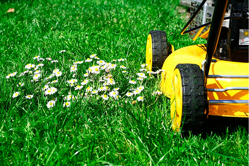

Que faire au jardin au mois de Juillet
Juillet est l’un des mois les plus chaud au jardin. Durant cette période, il est nécessaire d’arroser les pieds de vos plantes une fois par jour de préférence en soirée.
Au potager en juillet
- Chicorée
- Choux d’hiver, Choux-fleurs, Brocoli
- Cresson,Fenouil
- Haricot
- Laitue à couper et laitue d’hiver, mâche
- Navet, Pois, Oignons
Si vous partez en vacances et craignez que vos plantes souffrent de
soif, pensez à pailler autour de chaque plan afin de retenir
l’humidité naturelle.
Taillez les tomates en ne laissant que
trois ou quatre bouquets de fleurs sur la tige principale.
Au verger en juillet
- Rabattez au niveau du sol les branches des framboisiers ayant fructifié.
- Taillez les cassissiers et les groseilliers quand la récolte est terminée.
- Cueillez les premières poires d’été.
Pelouse
- Tondez la pelouse régulièrement, pas trop court et arrosez souvent.
Arbres et arbustes
- Taillez les pousses trop longues de vigne vierge.
- Taillez les haies de buis et de lauriers roses. Profitez-en pour faire des boutures de lauriers.
- Taillez les arbustes défleuris comme les seringats, les cotonéasters ou les odorants romarins.
- Pincez les jolies pousses des arbustes récemment plantés : ils n’en seront que plus vigoureux.
Plantes
- Désherbez et replantez les grosses touffes d'iris
- Plantez les bulbeuses d'automne (colchique).
Au balcon
- Arrosez copieusement vos clématites et pensez à protéger les pieds du soleil avec des tuiles ou des petits arbustes bien disposés.
- Faites attention à ne pas vous laisser envahir par la glycine.
- Fertilisez une fois par semaine toutes les plantes en pots sur le balcon
Jardin aquatique
- Éliminez les algues et les lentilles d’eau.
- Ajoutez régulièrement de l'eau afin de maintenair un niveau constant.